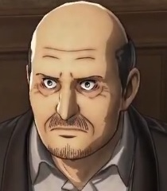
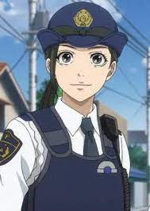
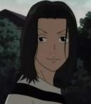
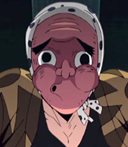

Modos de jogo
- Arcade
- Classíco
- Hardcore
- Jogo Rapído
- Sala Privada
- 
-
 Fazendeiro
Fazendeiro-  Policial
- Médico
-  Musico
-  Ferreiro
- Morador
(Personagem)

Description
O comerciante tem a função de achar e vender itens importantes como poções de cura, kits medícos e alimentos. Quando vilão podem sabotar suas poções e comercializalas.
O padeiro tem a função de vender alimento para manter os moradores nutridos. Quando vilão podem sabotar seus alimentos com veneno.
O fazendeiro tem a função de manter matéria prima ao padeiro. Quando vilão pode sabotar a matéria deixando toxíca.
O polícial tem a função de ficar acordado a noite vigiando a vila e prender suspeitos. Quando vilão pode sabotar morte de prisioneiros.
O médico tem a função de combater virús e doenças, assim deixando os aldeões saudáveis. Quando vilão o mesmo pode se aproveitar de virús malignos e bacterias para sabotar o vilarejo.
O musíco tem a função de tocar músicas apenas. Quando vilão pode fazer seu alvo adormecer com uma musiquinha de ninar e ataca-lo.
O ferreiro tem a função de manter armas disponiveis para proteção dos aldeões. Quando vilão pode-se aproveitar de suas armas para assassinar.
O morador.